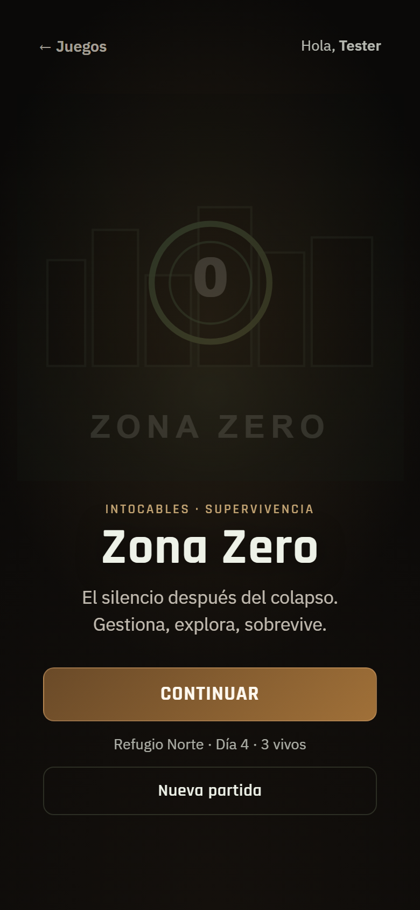
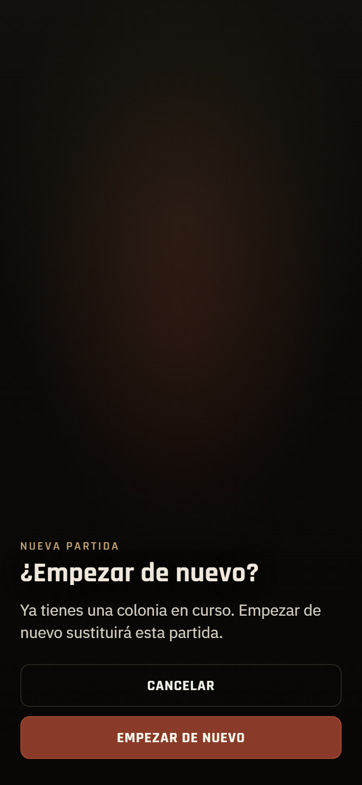
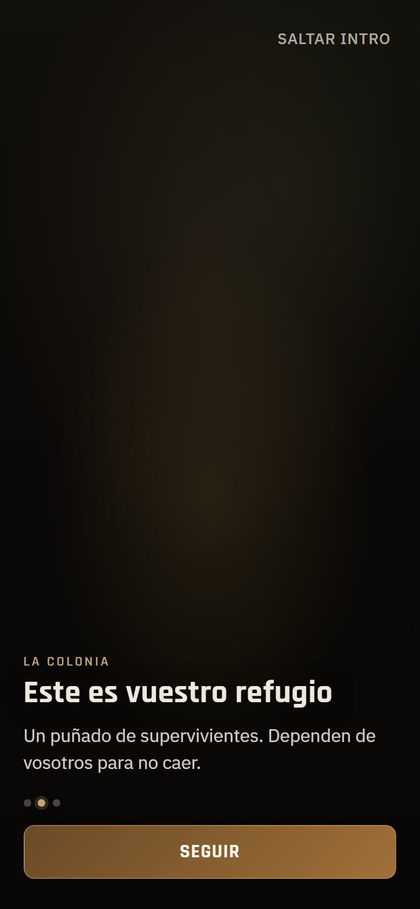
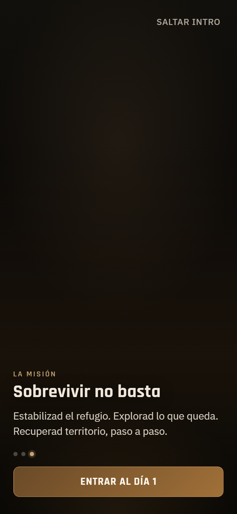
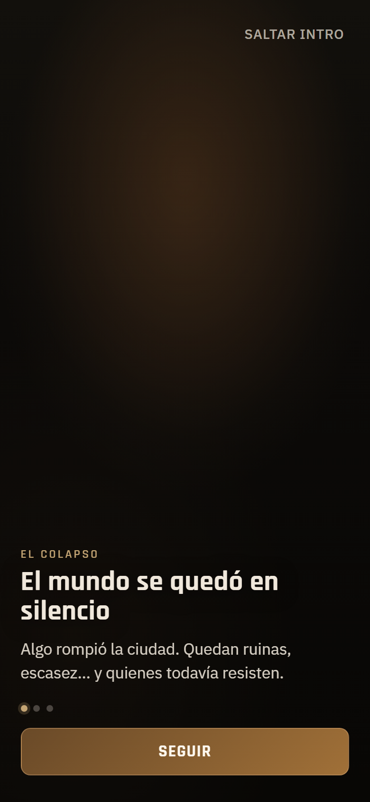
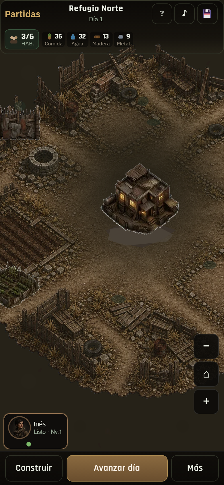
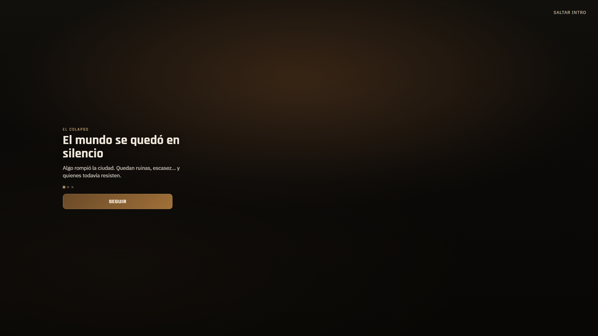
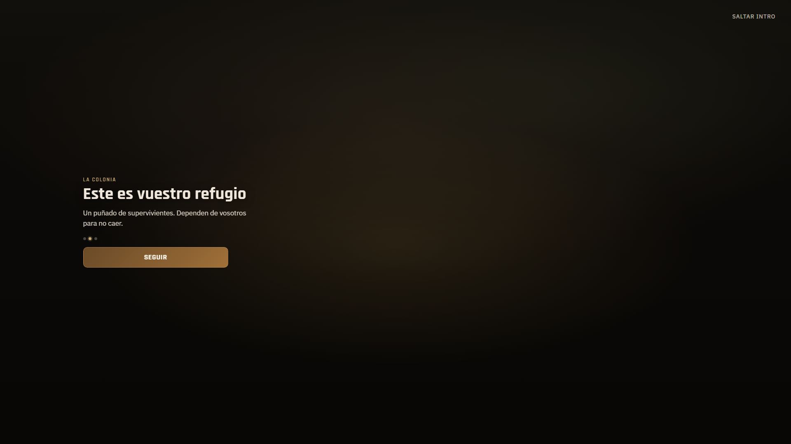
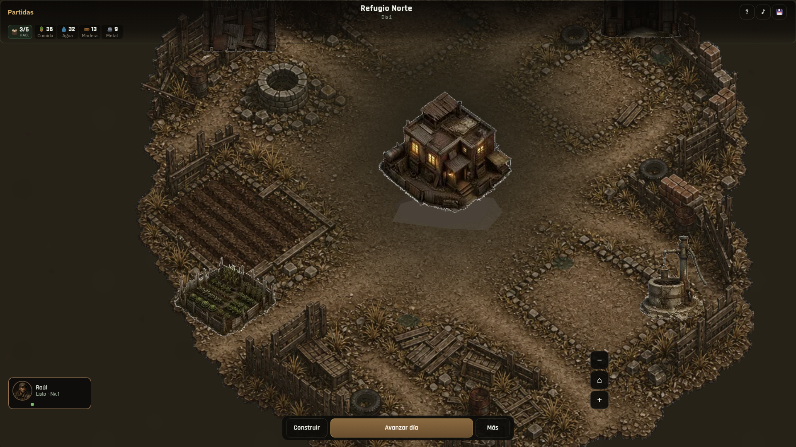
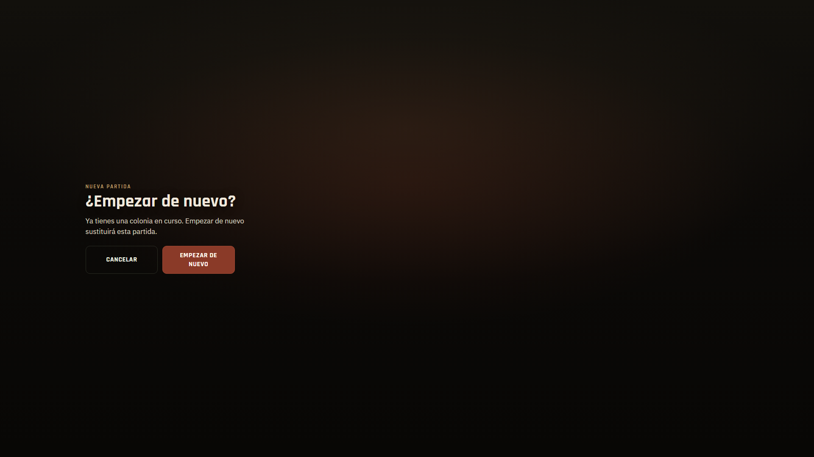

Con partida · Continuar + Nueva

Sobrescribir partida existente

Contexto / colapso

La colonia

Objetivo · Entrar al Día 1
Entrada tras intro

Saltar intro visible

Salto directo al Día 1

Sin partida · Nueva

Contexto

Colonia

Entrada tras intro

Sustituir colonia